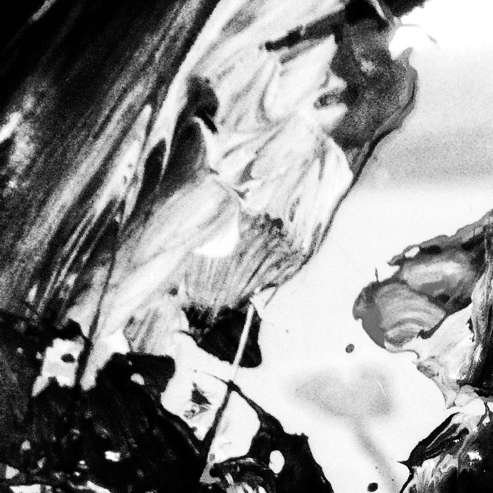
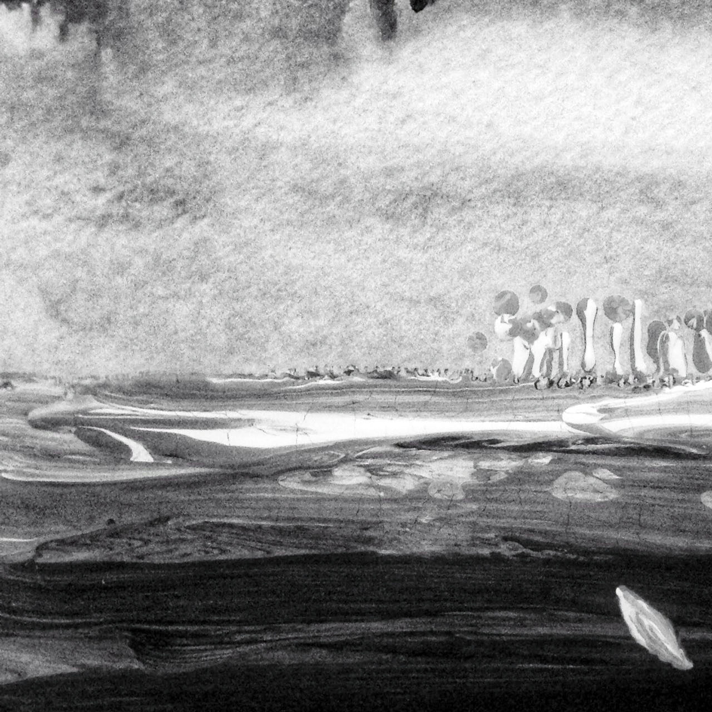
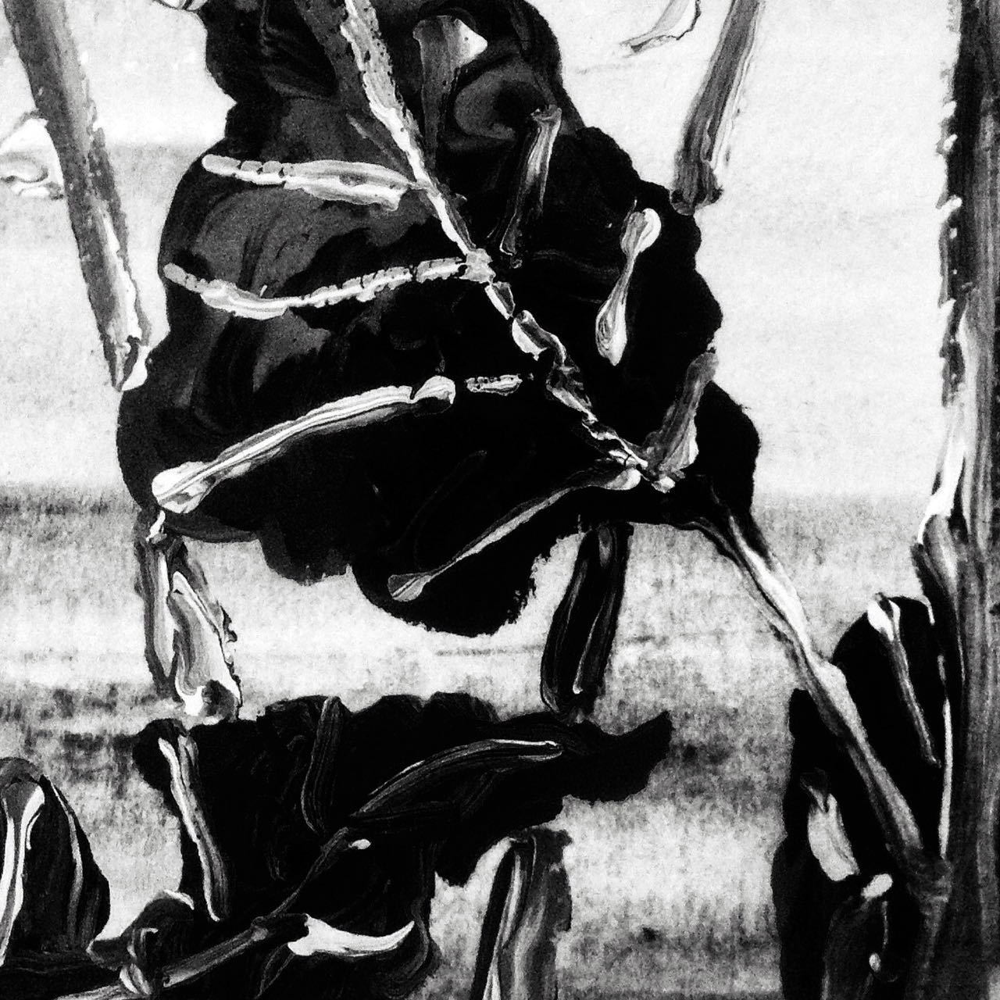
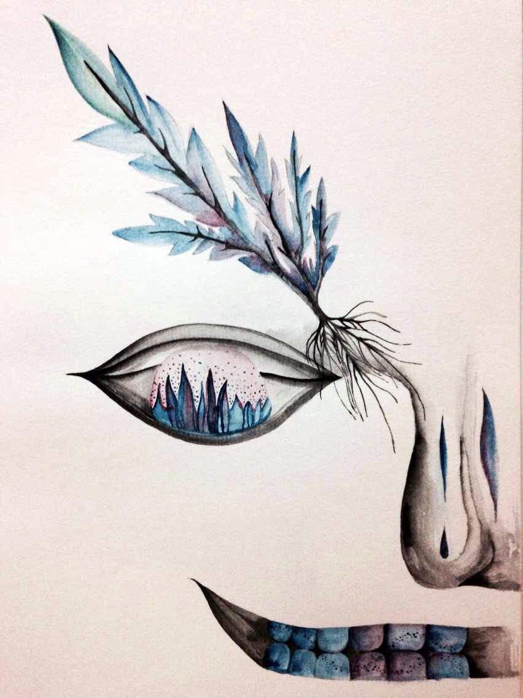
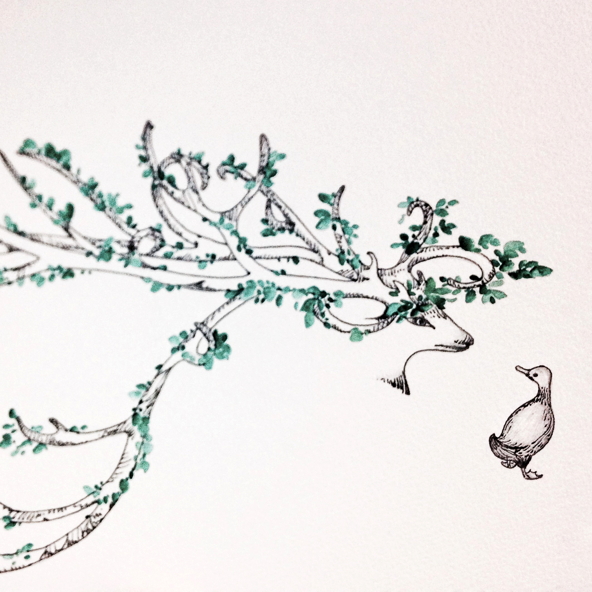
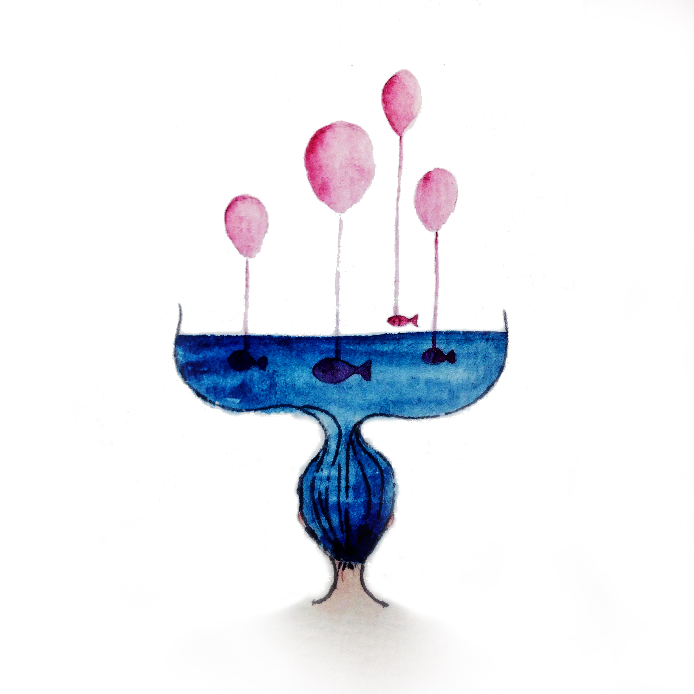
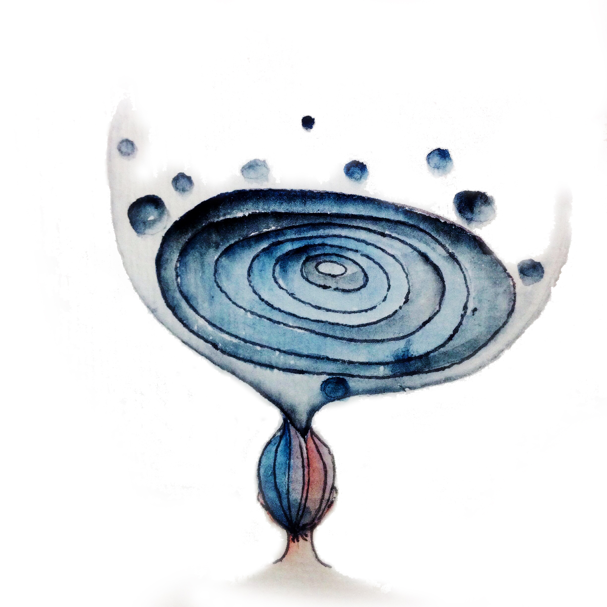
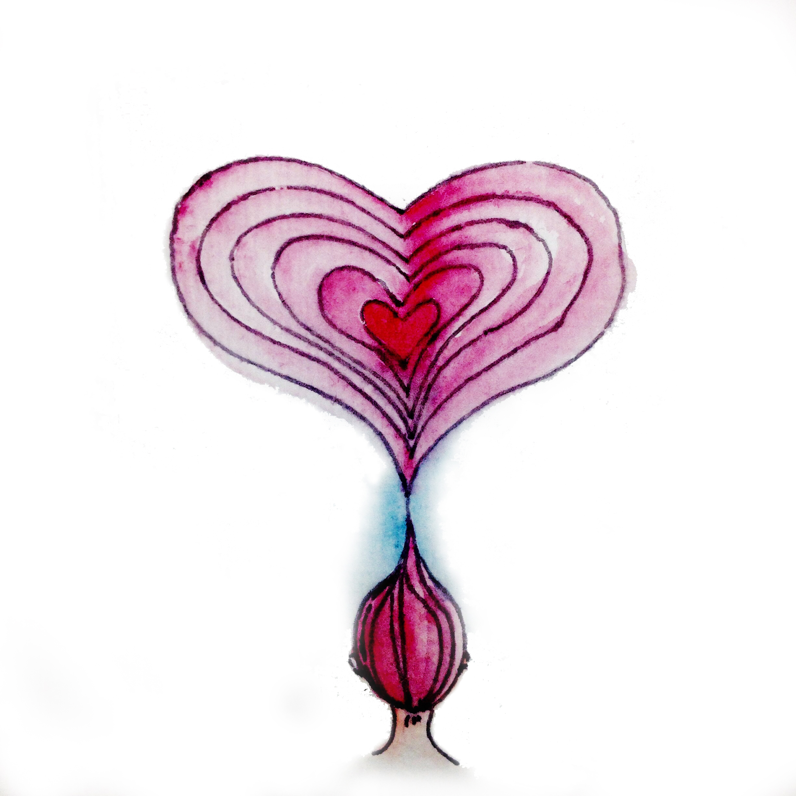
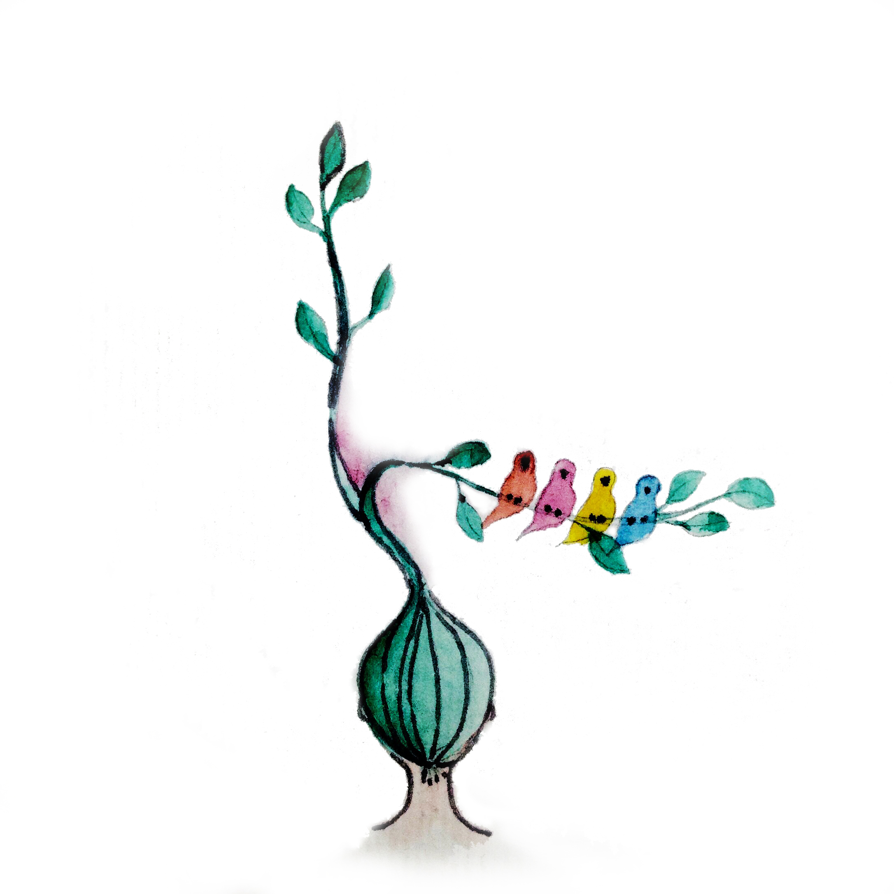

My dream is always dull at the very beginning. It always black and white and with few blurry contents. The scene becomes clear as I stay in dream world over time. A dream world is unfolding before my eyes.

Colors start to apear scatteredly as I stay longer in the dream world. Usually only one simple color dominant the scene. My dream world always has a color theme decided by itself.

I have never had a colorful dream world. As colorful as the reality. Everytime when I saw the dull grey sky, I tell myself “I am in dream now”.
